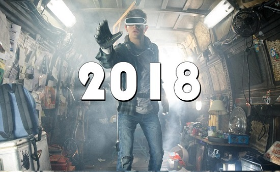

Ressources
Accueil
Fonctionnement
Comparaison de différents casques
Effets Secondaires
Ressources
Liens fonctionnement
écrans oled
Accessoires
Fonctionnement
Occulus et autres
Lentilles, FOV
Accéléromètre, gyroscope
La lumière bleue
Lentilles
calcul résolution écran
L'OLED ET QLED
Fonctionnement OLED
Accéléromètre
Capteurs mvt windows 10
Combinaison pour le casque
Liens comparaison
comparatif 1
Caractéristiques+prix
Casque Acer de Microsoft
Liens histoire/effets
Effets du casque
Le Sensorama
